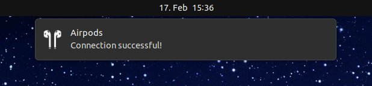
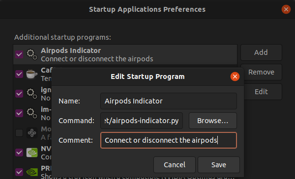

One afternoon I got really annoyed. I had to constantly switch between using my phone and my laptop as a source for audio. Apple makes it of couse very easy when jumping from Apple device to Apple device if they are connected to the same icloud account. But when you are using a iPhone and a Linux machine it sadly does look very different.
As I was starring at the same bluetooth settings for the n-th time that day I remembered that I had once written a simple bash script that I used to connect to an old pair of bluetooth headphones.
A fairly primitive script that spams the bluetoothctl connect command in a while loop until the connection with the device is established. If you want to use the script you will of course have to edit it and put in the MAC adress of your device (instead of 00:00:00:00:00:00).
Using only the bluetoothctl connect command should only work when the device was already connected at least one time before. Else we have to pair and trust our bluetooth device manually before being able to connect to it.
Using this script as a basis we can create an indicator applet for the GNOME desktop in python. The python script will create an handy little appindicator. By interacting with the extension we can execute our bash script from above and connect and disconnect from our Airpods more easily. Before we can do that we have to install the python bindings for AppIndicator. In Ubuntu this would be gir1.2-appindicator3. The suffix 3 means that this version supports GTK3 based applications.
This python script creates the appindicator in the main() routine by calling Indicator.new(). In build_menu() we create the GTK3 menu and add the different items that trigger our scripts. The most important menu items are 'Connect Airpods' and 'Disconnect Airpods'. It connects the menue items to the connect() and disconnect() routines. When the functions are called by the menu callback they invoke try_connect() and try_disconnect() respectively. The notify.Notifications.new() waits for the function to return a result in form of a string. The try_connect() function starts our bash script from before by creating a subprocess. The output of subprocess is the result of the bash script and by checking this output then a 'Connection successful!' or a 'Connection failed!' is returned to the connect() routine. The Notification.new() function then creates a GNOME notification displaying this string.
It works the same way with the disconnect routine.
For the sake of simplicity a different bash script is called. It can therefore look very simple:
Another small detail is, that the GNOME notification can carry our own icon (this is in this case 'airpods_icon.svg'). There ist also the possibility to use our own icon for our extension to be displayed as our AppIndicator icon. In this example it is called 'airpods_icon_alt.svg'. You will find both of these in the repository I will link to.
The way I have this set up on my machine is, that the python script starts up automaticaly as an Startup Application. This can be done by creating an entry in the Startup Applications Preferences. For this to work properly the scripts need to be made executable (chmod +x SCRIPTNAME).
This works for me like a charm and I hope you will enjoy this too. After disconnecting the Airpods form my Linux box they even reconnect automaticaly by some magic back to my iPhone. The whole project with all the needed files can be found in my repository on github.
For all that are struggeling to get decent sound quality out of their Airpods using Linux this post by Wombelix has helped me out a lot!